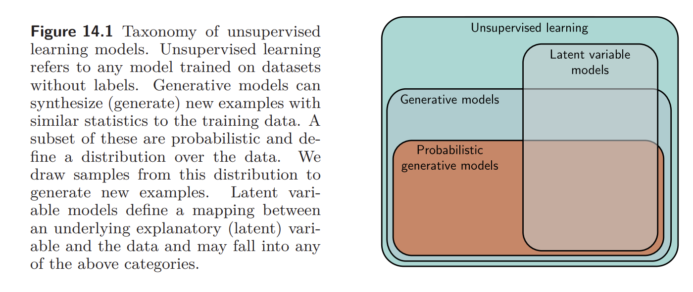
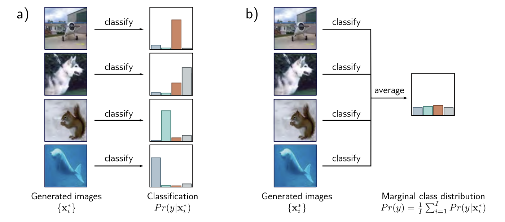
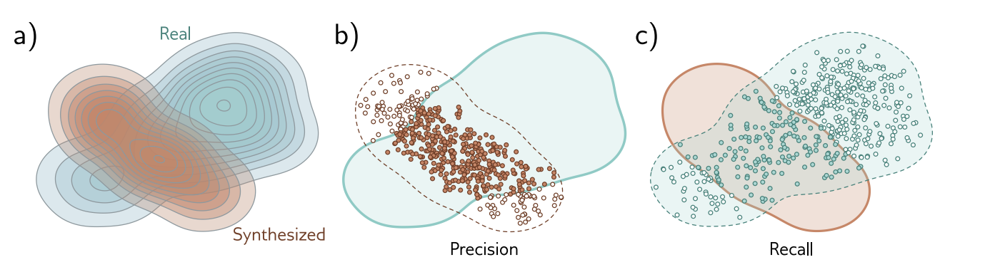

C14.Unsupervised learning summary
1.无监督学习的分类
下图介绍了3种无监督模型的关系:

generative model生成和输入数据相似的数据, probabilistic generative model对输入数据建立了一个分布, 这种分布除了用于生成带有随机性的数据外, 还可以用于评估数据.
2.无监督学习的性能度量
2.1.方向与动机
Efficient sampling
High-quality sampling
Coverage 相当于泛化性能
Well-behaved latent space
Disentangled latent space
Efficient likelihood computation
2.2.数字指标
Test likelihood 对于probabilistic models, 可以直接让模型测量test set的可能性来评估模型的性能.
Inception score 额外训练一个监督的分类模型, 将generative model的输出$\{\bold x^*_i\}$输入到该分类模型中, 可以得到①每张图片的多分类概率$Pr(y|\bold x^*_i)$, ②所有输出图片多分类概率的平均概率$Pr(y)=\frac{1}{I}\sum_{i=1}^I Pr(y|\bold x^*_i)$.

我们想让生成模型输出现实世界的物体, 而且等可能的输出各种物体, 即想要单张图片的的分类概率极端, 多张照片的平均分类概率均匀. 这种想法可以通过如下数值表示:
该式子被称为KL-divergence, 具体的表达omitted.
Fréchet inception distance 对generative model的输出和数据集分别进行混合高斯拟合, 再对拟合的两个分布计算Fréchet distance.
$\textcolor{red}{\bold{Error}}$?但是这个distance并没有对原始数据的距离建模, 而是对初始分类网络的深层节点的输出???????
Manifold precision & recall 测量一群输入数据和generative model的一群输出数据相邻的情况, precision相当于查准率, recall相当于查全率:

上图橙色synthesized区域就是generative model生成的数据区域.
判断邻居的方法只需要知道开球半径的大小, 可以通过同类的最近的k个邻居的平均距离得到.